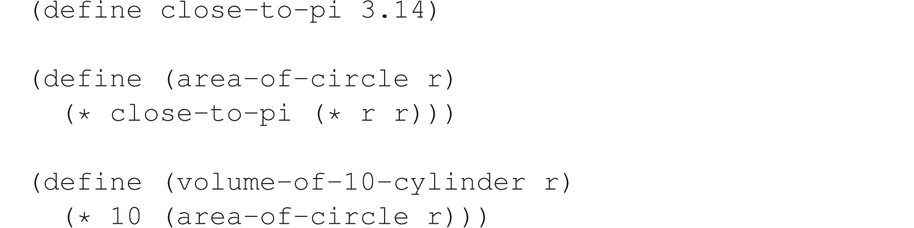

21.4 Interpreting Everything
Take a look at the following BSL program:

Think of these definitions as the definitions area in DrRacket. After you click RUN, you can evaluate expressions involving close-to-pi, area-of-circle, and volume-of-10-cylinder in the interactions area:
> (area-of-circle 1)
#i3.14
> (volume-of-10-cylinder 1)
#i31.400000000000002
> (* 3 close-to-pi)
#i9.42
The goal of this section is to refine your evaluator again so that it can mimic this much of DrRacket.
Exercise 360. Formulate a data definition for the representation of DrRacket’s definitions area. Concretely, the data representation should work for a sequence that freely mixes constant definitions and one-argument function definitions. Make sure you can represent the definitions area consisting of three definitions at the beginning of this section. We name this class of data BSL-da-all.
Design the function lookup-con-def. It consumes a BSL-da-all da and a symbol x. It produces the representation of a constant definition whose name is x, if such a piece of data exists in da; otherwise the function signals an error saying that no such constant definition can be found.
Design the function lookup-fun-def. It consumes a BSL-da-all da and a symbol f. It produces the representation of a function definition whose name is f, if such a piece of data exists in da; otherwise the function signals an error saying that no such function definition can be found. 
Exercise 361. Design eval-all. Like eval-function* from exercise 359, this function consumes the representation of an expression and a definitions area. It produces the same value that DrRacket shows if the expression is entered at the prompt in the interactions area and the definitions area contains the appropriate definitions. Hint Your eval-all function should process variables in the given expression like eval-var-lookup in exercise 355.
Exercise 362. It is cumbersome to enter the structure-based data representation of BSL expressions and a definitions area. As the end of chapter 21.1 demonstrates, it is much easier to quote expressions and (lists of) definitions.
Design a function interpreter. It consumes an S-expr and an Sl. The former is supposed to represent an expression and the latter a list of definitions. The function parses both with the appropriate parsing functions and then uses eval-all from exercise 361 to evaluate the expression. Hint You must adapt the ideas of exercise 350 to create a parser for definitions and lists of definitions.
You should know that eval-all-sexpr makes it straightforward to check whether it really mimics DrRacket’s evaluator.
At this point, you know a lot about interpreting BSL. Here are some of the missing pieces: Booleans with cond or if; Strings and such operations string-length or string-append; and lists with '(), empty?, cons, cons?, first, rest; and so on. Once your evaluator can cope with all these, it is basically complete because your evaluators already know how to interpret recursive functions. Now when we say “trust us, you know how to design these refinements,” we mean it.